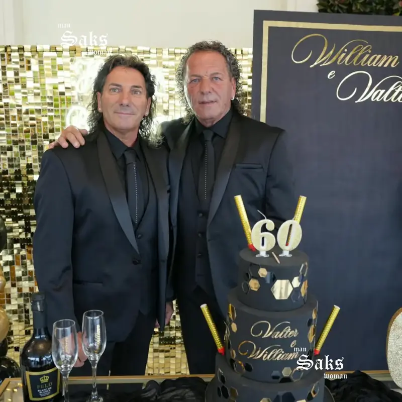

Saks è un atelier di cerimonia a Chieti Scalo che cuce l'abito sul tuo corpo, prova dopo prova.
Uomo, donna e bambino. Collezioni dei migliori marchi italiani, personalizzate nei tessuti, nei revers, nei ricami, e adattate dai nostri sarti fino alla taglia 75.
Per questo non lo vendiamo soltanto. Lo costruiamo insieme a te, dal tessuto all'ultimo bottone: scegli il modello, i sarti del nostro atelier lo adattano alle tue misure e lo rifiniscono finché non cade perfetto.
“L'abito ha riscosso un enorme successo, ho ricevuto tantissimi complimenti.”
Paola, testimone di nozze
le tue occasioni
ogni festaha il suo abito.
lo sposo
la mamma
gli invitati
i piccoli
le lauree

i compleanni
Cautieri
Musani
la coppia
il sì
e ancora Luigi Convertini · Francesco Spera · Tiber · Impero · San Germano · Caroline M · La Martina · Gavioli · Soani · JM Couture · Luigi Auletta · Papillon
S
75
l'eleganzanon ha unamisurasola.fino allatagliasettantacinque.